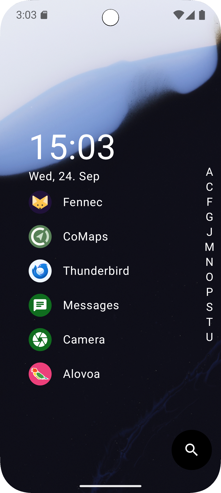
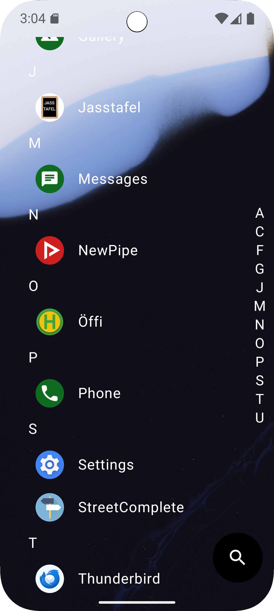
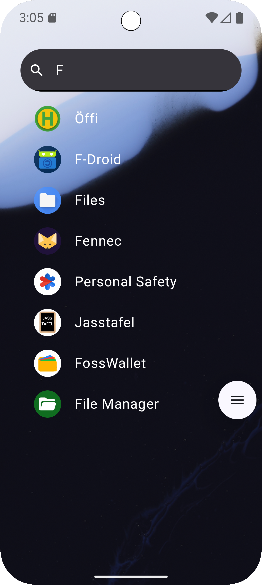
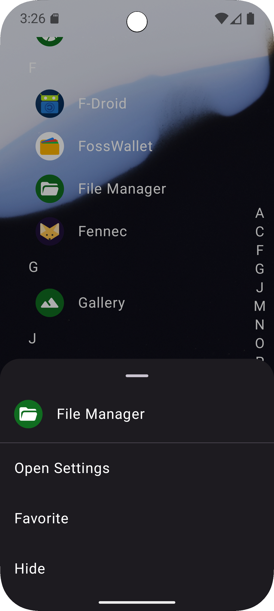

The main page of the launcher shows you your favorite apps, which you can manually manage.

If you want to find an app that is not in your favorites, just drag over the letters which act as an index into all of your apps. This puts you into the list of all apps, also known as the app drawer.

If you can't find what you are looking for, you can also use the search feature, which is conveniently placed in the bottom right.

If you long press on an app, a menu pops up which gives you a few options related to the app, like:
